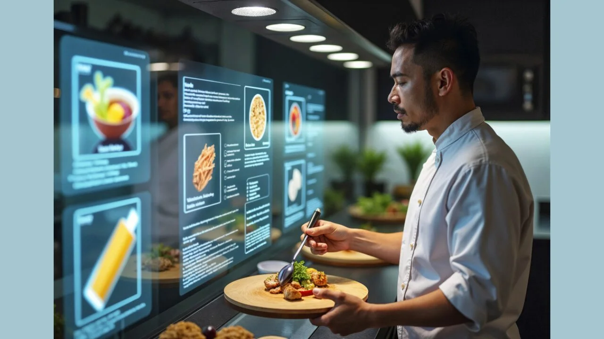

This was a unique project because it combined data modelling, business analysis and Power BI visualisation to turn sales data into actionable insights. I analysed customer behaviour, product performance, profitability and sales trends to identify opportunities for improvement and
to help support business decisions around inventory, staffing and marketing.

This project was a digital transformation case study focused on developing a business case for a unified Global HR Management System. I analysed current HR challenges, evaluated solution options, defined KPIs and risks, and developed an implementation approach using Business Case Analysis, Requirements Analysis, Stakeholder Analysis, and Risk Analysis.

This project was about improving canteen ordering process, where long queues, limited lunch breaks, stock shortages and food waste were affecting the employee experience. I analysed stakeholder needs and the existing process, developed a business case and evaluated solution options. I defined the functional and non-functional requirements, created a RACI matrix, mapped the To-Be process, and developed user stories and acceptance criteria. The project resulted in a structured digital canteen ordering solution, with clearly defined requirements and delivery processes covering menu management, online ordering, delivery, feedback and payroll integration, supported by an Agile delivery plan and Jira sprint structure.